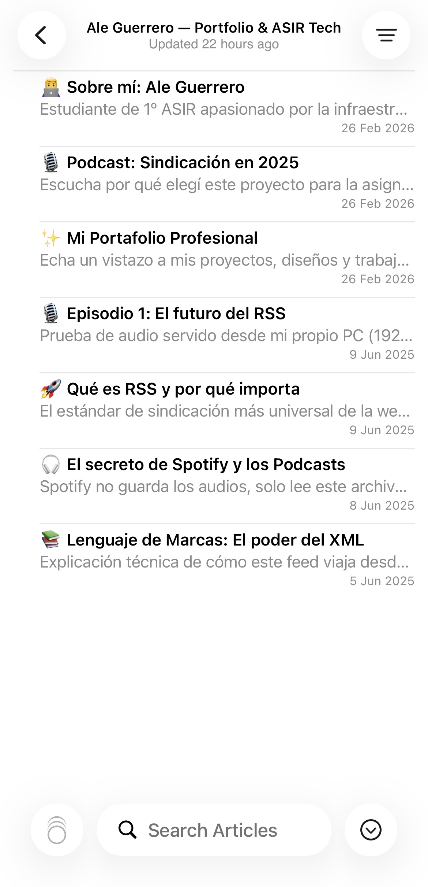

Cuando me pusieron este tema pensé que iba a ser un rollo. Spoiler: me equivoqué bastante. La sindicación de contenidos es la tecnología que hace que internet funcione de verdad, la que existía antes de que los algoritmos decidieran por ti lo que lees.
La sindicación de contenidos es básicamente un sistema para que las webs publiquen sus novedades en un formato estándar que cualquier programa pueda leer automáticamente. Sin que tengas que entrar tú a mirar si hay algo nuevo.
O sea, imagínate que sigues 20 blogs de tecnología. Sin RSS tendrías que entrar a los 20 cada día a ver si han publicado algo. Con RSS, es la web la que te avisa a ti. Sin publicidad de por medio. Sin que nadie decida qué ves primero.
Lo que más me sorprendió cuando investigué esto es que Spotify no aloja los podcasts. El audio está en el servidor del creador. Spotify solo lee el feed RSS del programa. Eso me pareció bastante elegante.
Es como si en vez de ir tú al quiosco cada mañana, el quiosquero te dejara todos los titulares en tu buzón, ya ordenados como tú quieres. El quiosquero es el servidor. Los titulares son el XML. Y tu lector de feeds es el buzón.
<?xml version="1.0" encoding="UTF-8"?> <rss version="2.0"> <channel> <title>Tech Syndication Feed</title> <link>https://aleguerrero.dev</link> <description>Noticias de tech</description> <item> <title>Qué es RSS y por qué importa</title> <pubDate>Mon, 09 Jun 2025</pubDate> <guid>https://aleguerrero.dev/rss-101</guid> </item> </channel> </rss>
Cuando se sube un artículo o episodio, el sistema actualiza automáticamente el fichero XML con la nueva entrada.
Cualquier cliente puede hacer una petición GET a la URL del feed y recibir el listado completo en formato estructurado.
El agregador lee el XML, extrae title, description y link, y lo presenta al usuario de forma legible sin ningún algoritmo de por medio.
Haz click en cualquier etiqueta XML del panel izquierdo. El panel derecho simulará cómo un agregador real interpretaría ese dato.
Este lector simula exactamente cómo funciona Feedly: carga artículos desde un feed XML, los parsea y los presenta al usuario. Haz click en cualquier artículo para ver también el XML que lo genera.
Netscape lanza la primera versión de RSS para agregar noticias de varios portales. La idea es simple y revolucionaria: separar el contenido del diseño.
RSS evoluciona a la versión 2.0. Paralelamente nace Atom como respuesta técnica más robusta. Google Reader se convierte en la referencia mundial.
Google cierra Google Reader. Todo el mundo lo da por muerto. Pero sobreviven los que de verdad lo necesitan: podcasters, desarrolladores y periodistas.
Nace JSON Feed. Los podcasts, adoptados masivamente por Spotify y Apple, demuestran que RSS no ha muerto: es la columna vertebral de toda la industria del audio.
Con la crisis de confianza en las redes sociales, la sindicación resurge como herramienta de soberanía digital. El usuario quiere recuperar el control.
Esta es la demo en vivo del proyecto. Introduces tu IP local, se genera el QR automáticamente, lo escaneas con el móvil y en segundos los artículos del feed aparecen en tu app RSS.
El PC sirve el archivo feed.xml por HTTP en la red local con un simple comando de Python. El QR codifica la URL de ese servidor.
Cuando el móvil escanea el QR, recibe la URL del feed. La app de RSS hace una petición GET a esa URL, descarga el XML, lo parsea y muestra los artículos.
Para demostrar que el lenguaje de marcas cumple su función, he configurado un archivo XML estructurado siguiendo el estándar RSS 2.0.
Al procesar dicho archivo a través del servidor local, el cliente (el móvil) es capaz de interpretar los metadatos (títulos, fechas y descripciones) y presentarlos en una interfaz de usuario limpia.
No se ha diseñado una App. Se ha creado un fichero de datos (feed.xml). El móvil solo actúa como intérprete del XML que hemos definido, demostrando la interoperabilidad total de la sindicación.

En la carpeta donde está el feed.xml, ejecutar: python -m http.server 8080. El PC empieza a servir el archivo por la red local.
Introducir la IP local del PC en el generador de arriba. El QR se genera automáticamente con la URL exacta del feed. Listo para escanear.
El móvil escanea el QR, abre la app RSS con la URL del feed ya cargada. En segundos aparecen todos los artículos. La demo funciona en cualquier móvil con app RSS.
<?xml version="1.0" encoding="UTF-8"?> <rss version="2.0"> <channel> <title>Feed de Ale Guerrero — 1º ASIR</title> <link>http://192.168.1.251:8080</link> <item> <title>Qué es RSS y por qué importa</title> <description>El estándar más universal.</description> <pubDate>Mon, 09 Jun 2025</pubDate> <guid>item-001</guid> </item> </channel> </rss>
Lo que demuestra este experimento es sencillo pero potente: el protocolo RSS funciona igual en un iPhone de última generación que en un móvil de hace 10 años.
No depende de JavaScript ni de APIs propietarias. Solo necesita HTTP y XML. Dos tecnologías robustas que seguirán funcionando cuando muchas redes sociales actuales hayan desaparecido.